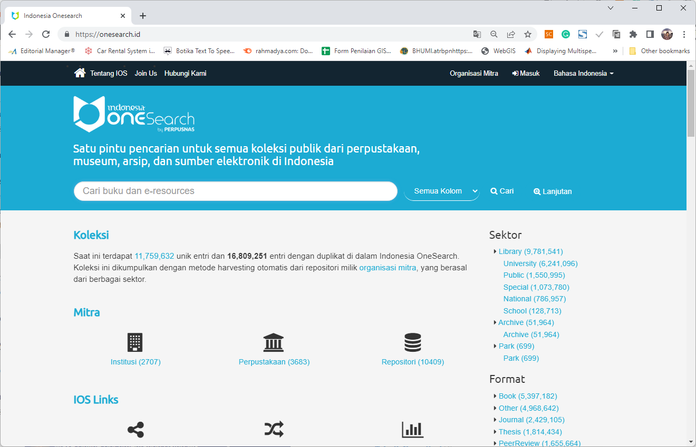
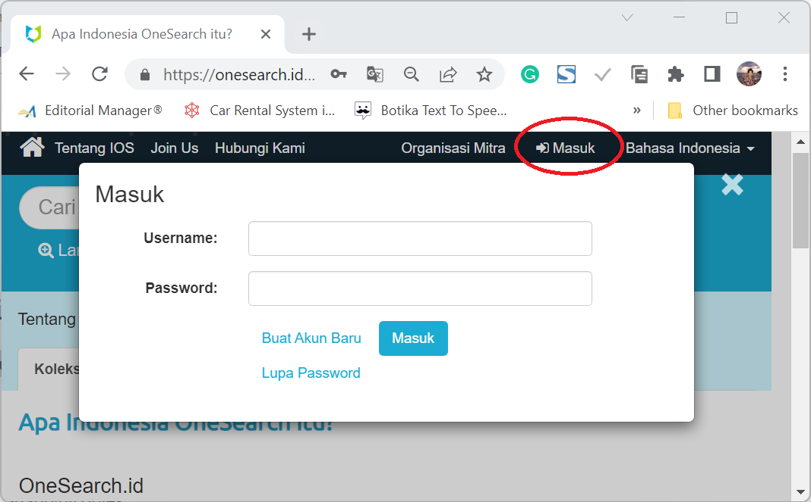
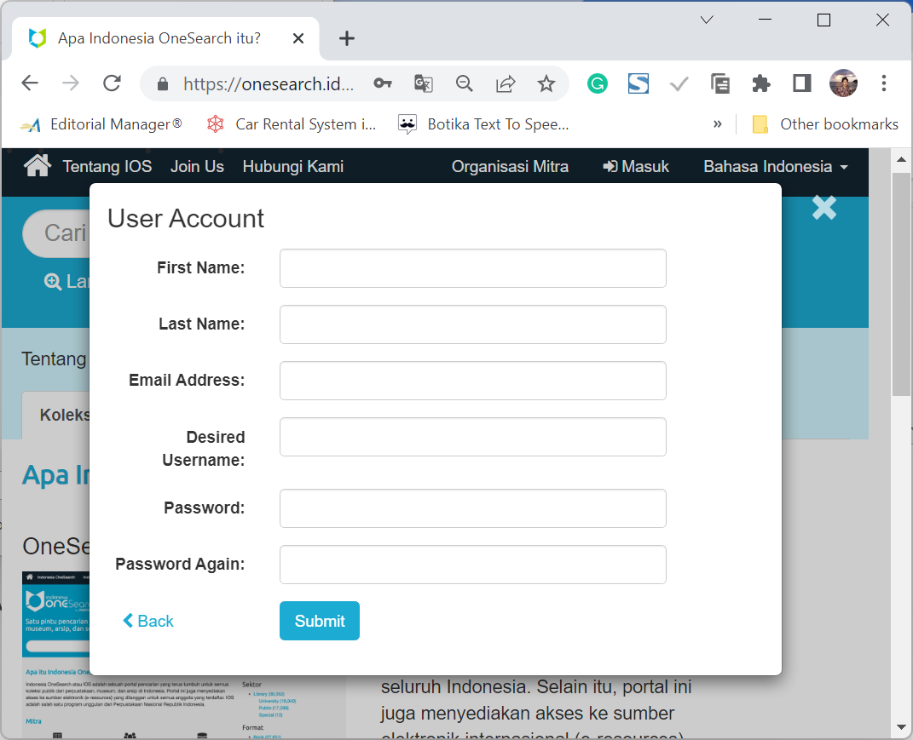
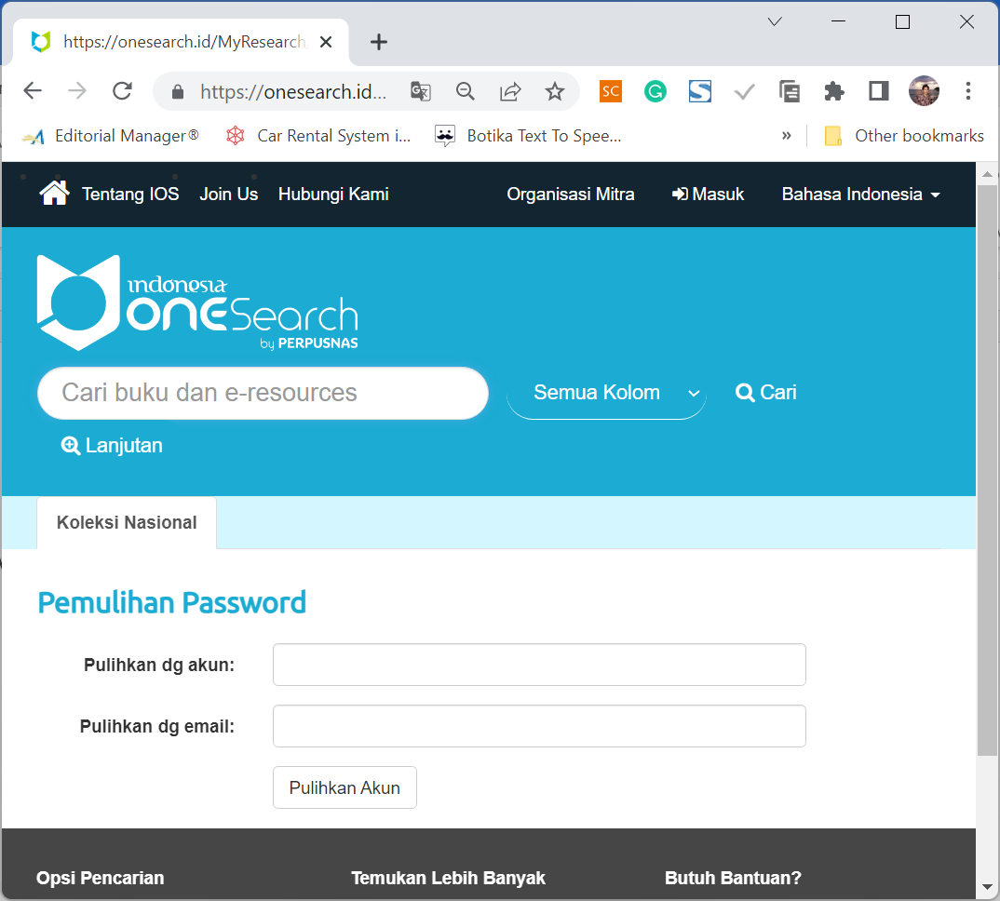
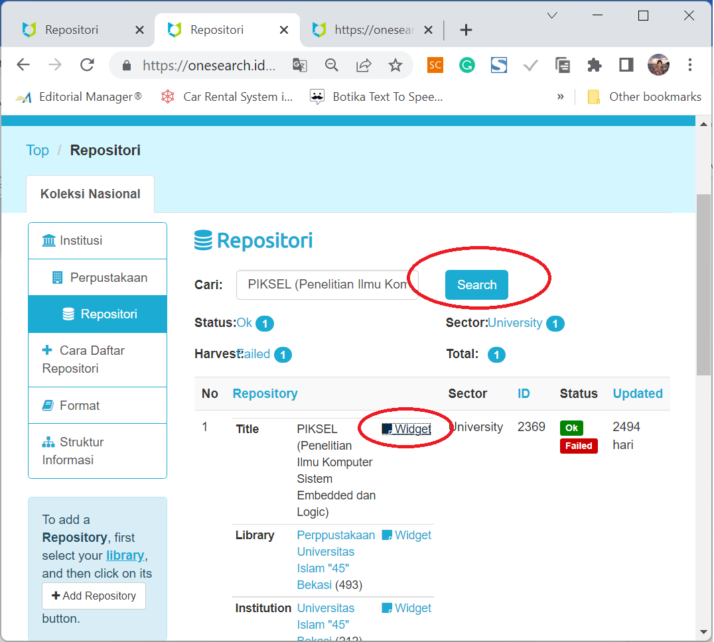
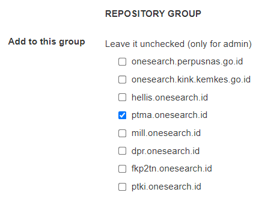
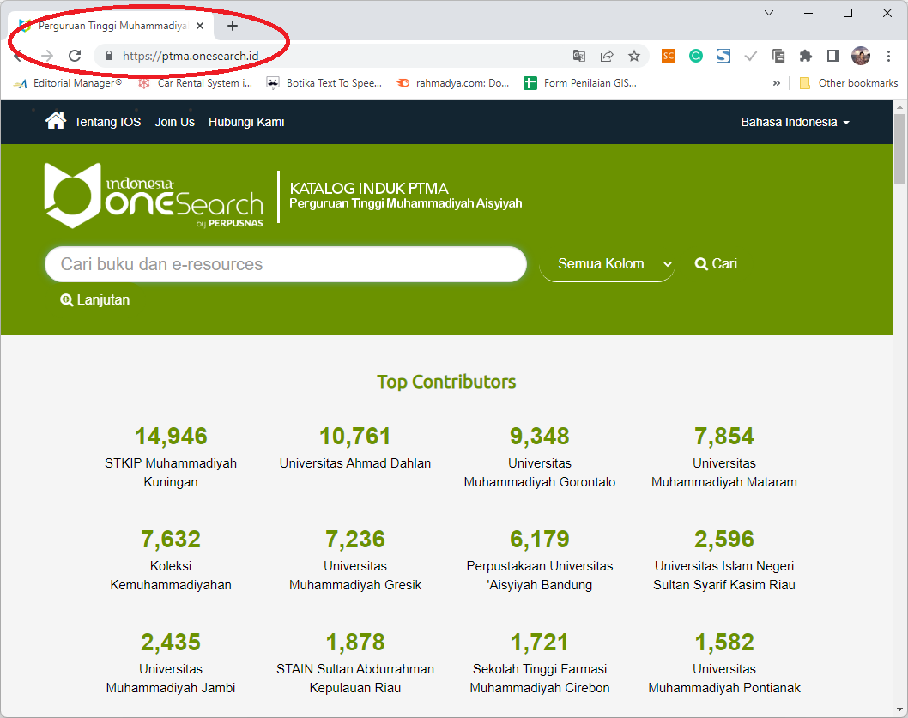

Welcome to IOS’s documentation!
Satu pintu pencarian untuk semua koleksi publik dari perpustakaan, museum, arsip, dan sumber elektronik di Indonesia
Overview
Indonesia OneSearch atau IOS adalah sebuah pintu pencarian tunggal untuk semua koleksi publik dari perpustakaan, museum, dan arsip di seluruh Indonesia. Selain itu, portal ini juga menyediakan akses ke sumber elektronik internasional (e-resources) yang dilanggan oleh Perpusnas RI untuk semua anggota yang terdaftar. Untuk bergabung dengan IOS, setiap repositori harus menyediakan API berbasis OAI-PMH (Open Archive Initiatives), sebuah protokol pengambilan metadata yang sudah digunakan oleh 75% lebih repositori di dunia.
Fitur Aplikasi
Fitur aplikasi Indonesia One Search (IOS) antara lain sebagai berikut:User Module, berisi pendaftaran, login, dan recovery.
Modul Institusi, yang berisi:
Menambah dan mengatur institusi
Menambah dan mengatur library
Menyediakan fasilitas Widget (link informasi suatu library sudah terindeks di OneSearch)
Repository Module, berisi fasilitas IOS terdiri dari
Mendaftarkan dan Manajemen Repository
Monitoring Repository
Repository Crawling, Indexing, & Deletion
Setting Widget
Consortioum Site Module, berisi pencarian collection pada grup konsorsium dalam bentuk dashboard
A.Modul User
Pada dasarnya untuk mencari artikel (collection) dapat dilakukan tanpa login. Hanya saja,untuk mendaftarkan institusi,library, atau repositori, perlu registrasi. Selain itu history pencarian juga tersimpan ketika user terdaftar.
1.Login
Untuk Login, masuk ke menu Masuk lalu isi Username dan Password
2.Registrasi
Untuk Registrasi, tekan menu Masuk lalu tekan Buat Akun Baru.Isi First Name, Last Name, Email Address, Desired Username, dan Passwrod serta mengetik Password Again.
3.Recovery Password
Jika lupa password, perlu recovery password. Langkahnya adalah tekan Lupa Password dilanjutkan dengan mengisi Akun dan Email. Tekan Pulihkan Akun untuk mereset pasword.
B.Modul Institusi
Modul ini berisi cara mendaftarkan Institusi, Library, dan Repository. Hanya institusi di wilayah Republik Indonesia yang diperbolehkan.
1.Menambah dan Mengatur Institusi
Untuk menambah dan Mengatur Institusi anda perlu Login terlebih dahulu. Tekan Organisasi Mitra dilanjutkan dengan menekan Daftarkan Institusi Anda.

Perhatikan informasi alur pendaftaran. Pastikan apakah institusi Anda sudah terdaftar atau tidak. Jika belum terdaftar, Anda dapat mendaftarkan institusi Anda. Pastikan jenis institusi Anda sesuai dengan aturan Perpusnas.

Selanjutnya mengisi form institusi.

2.Menambah dan Mengatur Perpustakaan
Untuk Menambah Perpustakaan Anda harus memiliki institusi terlebih dahulu. Masuk ke Institusi Anda lewat kolom pencarian, kemudian tekan +tambah perpustakaan.

Lanjutkan dengan mengisi informasi perpustakaan Anda.

3.Menambah dan Mengatur Repository
Untuk Menambah Repository Anda harus masuk terlebih dahulu ke Institusi dan your Library. Cari perpustakaan tempat bernaung repository melalui kolom pencarian.

Jika sudah ditemukan, tekan + Add Repository. Pastikan repository belum didaftarkan.

Isi Repository Form dengan benar, terutama di bagian Home URL, Cover URL dan OAI Base URL agar harvesting berjalan dengan sempurna. Bagian Repository Group harap Tidak Diisi, karena akan diisi oleh ADMIN perpusnas atau ADMIN konsorsium.

4.Mengatur Widget
Cari library Anda, dan tekan Widget. Selanjutnya Anda akan memperoleh Code widget yang dapat Anda tempelkan di library Anda sebagai informasi bahwa Library Anda sudah terindeks OneSearch. User selesai sampai tahap ini, dilanjutkan oleh proses verifikasi dan harvesting oleh admin perpusnas.
Widget juga untuk Institusi dan Perpustakaan. Widget sebagai bukti bahwa Institusi, Perpustakaan, dan Repository Anda sudah terindeks pada Indonesia One Search (IOS)
C.Repository Module
Modul ini berisi verifikasi, proses Harvesting dan pengindeksan library ke IOS. Diperlukan Login sebagai Admin/Verifikator Perpusnas.
1.Mendaftarkan dan Mengatur Repository
Untuk Mendaftarkan dan Mengatur Repository, pertama-tama Anda harus login sebagai Admin/Reviewer/Volunteer Perpusnas. Pada menu Harvest terdapat beberapa status, antara lain: Harvested, New, Failed, Reharvesting, Reindexed, Reharvest, Queuing, Deleted, dan Reindex.

Untuk memverifikasi, tekan salah satu menu Harvest, misalnya New. Lalu tekan Edit di menu Action. Maka form untuk review akan muncul. Ada tiga hasil review, antara lain: Pending, OK, Invalid,dan Deleted. Alasan dapat dipilih satu dari beberapa pilihan (OAI is valid, Invalid OAI URL, Invalid OAI Response format, Harvesting Error, OAI URL is obsolete, Server is down or uncreachable, dan source is already exist.
 Pemberitahuan hasil review dapat melalui email dengan menceklis kirim email notifikasi kepada admin repositori ini. Setelah itu ada pilihan aksi antara lain: lanjutkan harvesting sebelumnya, harvest ulang semua record, index ulang semua record, hapus semua record, dan tidak ada. Selanjutnya proses diakhiri dengan menekan Simpan.
Pemberitahuan hasil review dapat melalui email dengan menceklis kirim email notifikasi kepada admin repositori ini. Setelah itu ada pilihan aksi antara lain: lanjutkan harvesting sebelumnya, harvest ulang semua record, index ulang semua record, hapus semua record, dan tidak ada. Selanjutnya proses diakhiri dengan menekan Simpan.

2.Monitoring Repository
Status repository dapat dilihat dengan menekan tombol View Log Details yang berisi informasi proses verifikasi dan harvesting.

3.Repository Crawling, Indexing, & Deletion
Crawling, Indexing, dan Deletion dapat dilakukan lewat menu verifikasi form repositori. Pada bagian aksi terdapat beberapa aktivitas antara lain: lanjut harvesting sebelumnya, harvest ulang semua record, index ulang semua record, hapus semuar record, dan tidak ada.

Ketika tombol Simpan ditekan, proses dijalankan yang ditunjukan di menu monitoring dan status.

4.Seting Widget
Ada tiga widget yang disediakan oleh IOS, antara lain: Institution, Library, dan Repository. Widget diset otomatis yang akan mengarahkan ke dashboard institusi/library/repository pada IOS, setelah tombol Widget ditekan.

Selanjutnya kode dapat dikopi ke website institusi/library/repository yang mengarahkan ke dashboard di IOS.

D.Modul Konsorsium
Terkadang beberapa institusi/library/repository memiliki keseragaman, misalnya yang berkaitan dengan kesehatan, pendidikan, atau berdasarkan lokasi geografis tertentu.
1.Menambahkan Institusi ke Konsorsium
Modul konsorsium bermaksud membuat grup berdasarkan kesepakatan, misalnya konsorsium Muhammadiyah. Untuk membentuk konsorsium beberapa institusi dengan jumlah minimal tertentu mengajukan permohonan resmi untuk membentuk konsorsium. Selanjutnya Admin perpusnas akan membuat sub-domain konsorsium.
sub-domain, misalnya: Konsorsium Muhammadiyah. Menu home berisi pemberi kontribusi terbanyak dari konsorsium tersebut.
